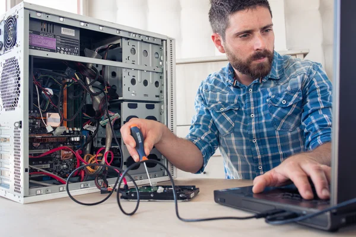
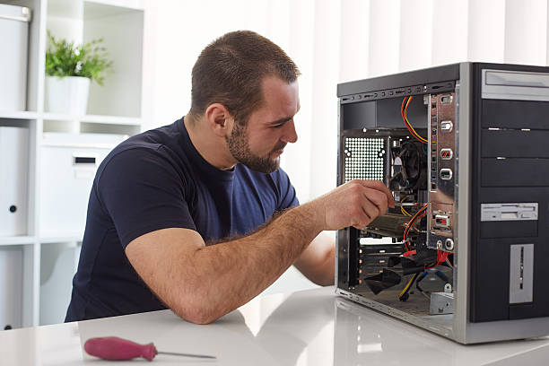

Equipos
EquiposDiagnóstico y reparación
Identificamos fallas de hardware, comprobamos componentes y orientamos la reparación de computadoras.
Solicitar servicioSOLUCIONES INFORMÁTICAS
Atención integral para mantener tus equipos, programas y redes en buen funcionamiento. Explora nuestros servicios y solicita información.
Solicitar una evaluaciónCATÁLOGO TECHSUPPORT
Selecciona una categoría para encontrar el tipo de asistencia que necesitas.
Mostrando 6 servicios
EquiposIdentificamos fallas de hardware, comprobamos componentes y orientamos la reparación de computadoras.
Solicitar servicio
EquiposLimpieza, revisión y recomendaciones para prolongar la vida útil de los equipos.
Solicitar servicio Redes
RedesConfiguración y revisión de conexiones, acceso a Internet y recursos compartidos.
Solicitar servicio Seguridad
SeguridadBuenas prácticas de actualización, respaldos y protección de la información.
Solicitar servicio
SoftwareInstalación, actualización y configuración de aplicaciones necesarias para trabajar.
Solicitar servicioOrientación y diagnóstico a distancia para resolver incidencias de uso habitual.
Solicitar servicio¿NECESITAS AYUDA?
Cuéntanos qué inconveniente necesitas resolver y selecciona el servicio adecuado.